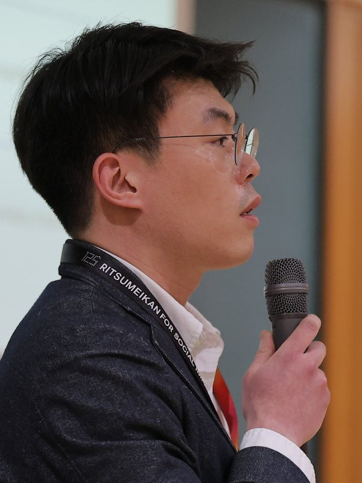

전누리
사회학 연구자 · 중앙대학교 사회학과 박사수료
사람들이 어떻게 함께 모이고, 항의하는지 연구합니다.

연구
성공회대 사회학과에서 석사과정을 마치고 중앙대 사회학과에서 박사과정을 수료했습니다. 사회운동과 정치사회학, 노동운동에 관심을 가지고 공부하고 있습니다. 2021년부터 전국금속노동조합 노동연구원 객원연구위원으로 일하고 있습니다.
집회·시위 참여자의 이념적 양극화와 ‘분쟁사회’의 격화, IT·게임산업 노조 조직화의 확산, 1980–90년대 고등학생운동과 그 참여자들의 이후 삶을 다룬 논문을 발표했습니다. 한국의 노동조합과 청소년운동의 역사를 다룬 책도 여러 권 함께 펴냈습니다.
최근 한국 사회에서 거세지고 있는 보수 진영의 항의행동과 그 동원 과정에 주목해 자료를 모으고 있습니다. 아울러 학생인권조례를 둘러싼 찬반 운동의 경합과 대립을 주제로 박사학위논문을 쓰고 있습니다.
- 사회운동·집합행동
- 정치사회학
- 노동운동
- 노동사회학
- 노조 조직화
- 청소년·학생운동
- 정치적 양극화
학술논문
-
2025
주저자전누리·김우식. 2025. 「“우리도 노조 만들 수 있는 거였어?”: IT·게임산업 노조 조직화 확산 연구」. 『산업노동연구』 31(3): 45–93. DBpia
-
2024
주저자전누리·신진욱. 2024. 「한국에서 집단적 항의행동의 확산과 ‘분쟁사회’의 격화: 집회·시위 참여자의 이념적 양극화와 정치적 당파성, 2013~2022」. 『한국사회학』 58(1): 53–97. DOI 10.21562/kjs.2024.02.58.1.53DBpia
-
2019
단독전누리. 2019. 「고등학생운동 참여자의 사회진출에 관한 연구: 고등학생운동의 집합적 정체성 형성과 그 영향」. 『기억과 전망』 41호. RISS
학위논문
-
2016
전누리. 2016. 「고등학생운동 참여자의 사회진출에 관한 연구: 고등학생운동의 집합적 정체성 형성과 그 결과를 중심으로」. 성공회대학교 일반대학원 사회학과 석사학위논문.
저서 (공저)
- 2025조한진희 기획, 김소연·전성원·김대현·정경화 외 7명. 2025. 『고등학생 운동사』. 동녘. 책 정보
- 2024왕의조·전누리·정경원. 2024. 『보건의료노조 37년사: 1987–2023 — 돈보다 생명을』. 전국보건의료산업노동조합 기획. 한내. 책 정보
- 2024왕의조·전누리. 2024. 『키워드로 보는 보건의료노조 37년사: 1987–2023 — 돈보다 생명을』. 전국보건의료산업노동조합 기획. 한내. 책 정보
- 2017정경원·전누리. 2017. 『서울지하철노동조합 30년사: 해방역에 닿을 때까지』. 한내. 책 정보
- 2016공현·전누리. 2016. 『우리는 현재다: 청소년이 만들어온 한국 현대사』. 빨간소금. 책 정보
학술대회 발표
- 2026.02전누리·신진욱. “Nostalgia of the ‘86 Generation’ or Multi-layered Life Histories of Resistance?: A Field In-depth Interview Study of Middle-aged Participants in Impeachment Demonstrations.” IPAC 2026 (International Postgraduate and Academic Conference), 리쓰메이칸대학 사회학연구과, 교토, 2026년 2월 10–11일. 행사 정보
- 2025.08전누리. 「탄핵집회 현장 심층면접 연구: 어떻게 수행하고 무엇을 경험했나?」. 비판사회학회 학술대회, 2025년 8월. DBpia
- 2025.06전누리·신진욱. 「586의 추억인가? 저항의 다층적 생애사인가?: 탄핵 집회 중장년 참여자의 현장 심층면접 연구」. 한국사회학회 2025 전기사회학대회, 계명대학교, 2025년 6월 20–21일. 자료집
- 2024.08전누리·김우식. 「노조 조직화 확산에 관한 연구: 화섬식품노조 IT위원회 사례를 중심으로」. 한국산업노동학회 2024 신진연구자 여름캠프, 충남 예산, 2024년 8월 23–24일.
- 2021.12전누리. 「누가 거리로 나가는가?: 2013–2020년 한국의 집회·시위 참여자 분석」. 한국사회학회 사회학대회, 2021년 12월. DBpia
- 2021.02전누리. “‘Exit’ as an Inevitable Choice: A Qualitative Study on the Resignation Experience of Specialized High School Graduates.” IPAC 2021 (International Postgraduate and Academic Conference), 중앙대학교(온라인), 2021년 2월 19일.
기고
- 2026.08「인공지능 등 기술발전에 대한 해외 노동운동의 대응 소개」. 금속노조 노동연구원 이슈페이퍼. 원문
- 2025.09「독일 노동운동의 새로운 도전: 극우포퓰리즘의 공세와 대응」. 금속노조 노동연구원 이슈페이퍼. 원문
- 2025.02「트럼프 2기 행정부의 노동정책과 노동운동의 대응 전망」. 『노동법률』. DBpia
- 2024.07
- 2024.05「미국 노동운동의 고조와 그 배경」. 금속노조 노동연구원 이슈페이퍼. 원문
- 2023.12「화학섬유식품산업노조 사무·연구·일반직 조직화 사례 분석」. 금속노조 노동연구원 이슈페이퍼. 원문
- 2023.05「기업의 사회적 책임성(CSR)과 ESG 경과의 소개」. 금속노조 노동연구원 이슈페이퍼. 원문
- 2022.11「소규모 사업장에 관한 선행연구 및 조직화 사례」. 금속노조 노동연구원 이슈페이퍼. 원문
- 2022.05「기술발전이 노동과 일자리에 미칠 영향을 전망한 연구 동향」. 금속노조 노동연구원 이슈페이퍼. 원문
- 2021.12「사무·연구직 조직화 논의 및 사례 소개」. 금속노조 노동연구원 이슈페이퍼. 원문
- 2021.06「조선산업 사내하청/비정규 노동자 조직화 방안 제언」. 금속노조 노동연구원 이슈페이퍼. 원문
- 2020.03–
2021.01연재 「1980년대의 청소년들, 너무나 정치적이었던」(전 6회). 『오늘의 교육』.- 시대 속의 중고생들 거리에 서다 (2020.03)
- 학교와 사회를 바꾸는 주체로 나서다: 전교조 지지 투쟁까지의 고등학생운동의 폭발적 전개 (2020.05)
- 학교를 ‘현장’으로, 학생을 ‘사회변혁의 주체’로: 고등학생운동의 집합적 정체성 (2020.07)
- ‘운동에 눈뜬’ 고등학생들의 ‘학생답지 않은’ 생활 (2020.09)
- 대학이냐, 노동 현장이냐?: 졸업 이후의 진로 선택과 진입 과정 (2020.11)
- 고등학생운동은 한국 사회에 무엇을 남겼는가: 운동의 소멸 그리고 운동의 결과와 의의 (2021.01)
- 2019.07
- 2012.06「마침내 열린 학생인권의 시대: 서울특별시학생인권조례의 제정과 그 의미」. 『황해문화』. DBpia
- 2010.12「학생인권조례 통과와 전망」. 『진보평론』 46호(2010년 겨울): 207–214. DBpia
연구보고서
- 2025연구책임금속노조 청년 조합원 정치의식 연구전국금속노동조합 조직실
- 2025
- 2025
- 2025
- 2024공동연구원금속노조 전략조직화 평가와 과제전국금속노동조합 노동연구원
- 2024
- 2023
- 2022
- 2022
- 2022
- 2021공동연구원코로나19 이후 노동조합 활동방향 연구전국금속노동조합 노동연구원
- 2021
- 2020공동연구원조선산업 비정규, 사내하청 조직화 연구전국금속노동조합 노동연구원·조선업종노조연대
- 2019
이력
학력
- 2019중앙대학교 일반대학원 사회학과 박사과정 수료지도교수 신진욱
- 2016성공회대학교 일반대학원 사회학과 석사지도교수 이종구
- 2014단국대학교 정치외교학과 학사사학과 제2전공
경력
- 2021–전국금속노동조합 노동연구원 객원연구위원
- 2018–2020BK21플러스 「복합위기 시대의 지속가능한 사회통합」 참여대학원생·보조연구원중앙대학교 사회학과
- 2014–2019현대한국구술자료관 구축 연구사업 보조연구원(2014–2016), 검수위원(2016–2019)한국학중앙연구원 한국학진흥사업단
수상
- 2020
- 2016대학원 우수논문상성공회대학교 · 석사학위논문
강의
- 2025.09–현재현대사회의 쟁점중앙대학교 교양학부 · 학부생 대상